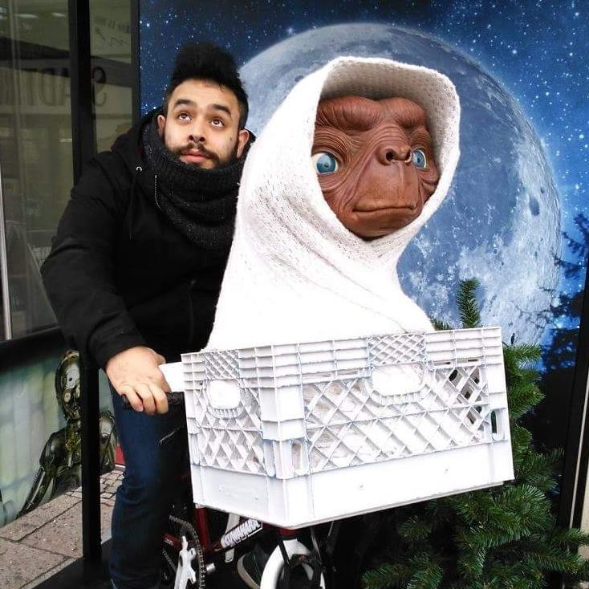

Mucedda Flaviano - Junior Developer
- Rue Georges Delporte, 10
- 7000 Mons
- 21 octobre 1985
- +32.487.63.43.23
- flaviano.mucedda@gmail.com

E.S.A.P.V , Mons
Bachelier en Arts plastiques , Visuels et de l’espace. Option: Image Dans le Milieu
Président du conseil des étudiants et membre du Conseil de Gestion Pédagogique
LeSite, Hornu
Infographie
IAD,Louvain la neuve
Multimédia
Institut Saint Luc Mons
CESS Technique de qualication , Arts Plastiques
Assistant manager
Balls & Glory : 2016-2017
+ Participation à l’ouverture d’un nouvel établissement , Formation du personnel , Répartition des tâches
+Cherche à l’amélioration constante du lieu de travail , Capacité à sortir de sa zone de confort
Chef de cuisine
Peck47 , Le bistronomiquement Belge, 2014-2016
+ Gestion d’équipe , des commandes , du stock , de la mise en place , Formation des nouveaux employés
+ Précision , Rapidité , Réactivité , Adaptation , Team Management
Commis de cuisine
Le bistro de Jean-Phi , ICOOK , A bout de souffre , 2012-2014
+ Assimilation rapide d’informations , Sens de l’organisation , Résistant à la pression , Travail en équipe
+ Préparation de la mise en place et service pour Mise en bouche, entrée et dessert, traiteur, Business Catering
Barman
Le chin-chin , Le tam-tam , Le bateau Ivre 2006-2014
+ Orienté Client et Service , Réactif face aux problêmes , Passage et réception des commandes , Conseil produit
Programateur culturel , Event Planner
Le bateau ivre , Get Mad Asbl 2006-2014
+ Multitasking , Respect des Deadlines , Résistance au stress , Créatif
Plasticien
Musée de la gravure , M.A.R.S. Mons , Beaux Arts de Charleroi , CCJF St Gilles 2006-2017
Graphiste Junior & webdesigner (stage)
Meaweb Sprl ,2007-2008
Médiateur culturel et arts plastiques (stage)
M.A.R.S. Mons, Transcultures ,2005-2012
Pro Skills
Leadership , Teamplayer , Client support , Creative , Problem Solver
Tech Skills
Front-end , Back-end , Graphic Design , Illustration , Video Editing
FR : C2
NL : A2
EN : B2